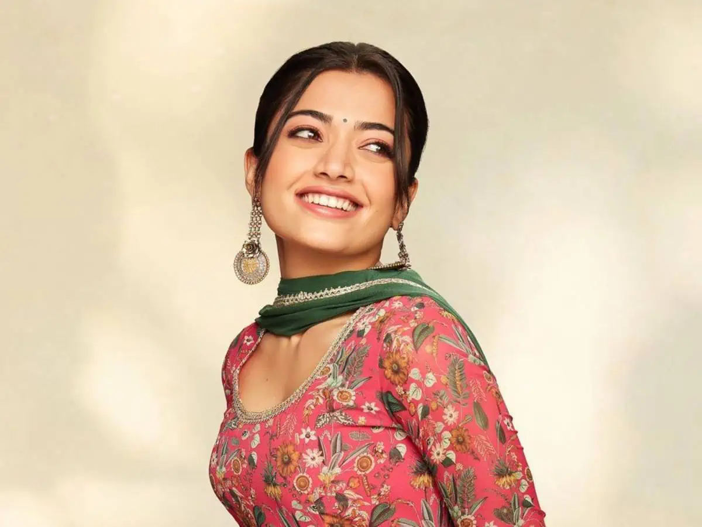

In this Indian name, the name Mandanna is a patronymic, and the person should be referred to by the given name, Rashmika.
Rashmika Mandanna (/rəʃmɪkɑː mənðənɑː/; born 5 April 1996) is an Indian actress who works in Telugu, Kannada, Hindi and Tamil films. She has received four SIIMA Awards and a Filmfare Award. One of South India's highest-paid actresses, she was featured in Forbes India's 2024 list of "30 Under 30".
Rashmika made her acting debut with the Kannada film Kirik Party (2016), and found further success in the action picture Anjani Putra and romance Chamak (both 2017). Rashmika's first Telugu film release was the romantic comedy Chalo but the romance Geetha Govindam (both 2018) proved to be a turning point in her career and earned her the Filmfare Critics Award for Best Actress. She later starred in the Telugu action comedies Devadas (2018) and Sarileru Neekevvaru (2020), and the romance Bheeshma (2020). Rashmika's first Tamil release was the action drama Sulthan (2021), and had her top-grosser in the language with the action film Varisu (2023).
Rashmika earned wider recognition as the female lead in the action film Pushpa: The Rise (2021). After playing a supporting role in the Telugu period drama Sita Ramam (2022), she expanded to Hindi cinema and had her highest-grossing release with the action drama Animal (2023).
Rashmika Mandanna was born on 5 April 1996 to Suman and Madan Mandanna into a Kodava Hindu family in Virajpet, a town in Kodagu district, Karnataka.[1][2][3] Her father owns a coffee estate and a function hall in her hometown, and her mother is a homemaker.[4] She has a younger sister, Shiman.[5] As a child, Rashmika's family struggled financially, and had difficulties finding a home and paying rent; according to Rashmika, her parents could not afford to buy her toys and the experience has continued to influence her relationship with money.
After noticing her win a pageant in 2015, Rishab Shetty offered Rashmika her debut in his Kannada romantic comedy, Kirik Party (2016) opposite Rakshit Shetty.[16] The film went on to become one of the highest-grossing Kannada films.[17][18][19] Sunayana Suresh of The Times of India praised her performance, writing "Rashmika Mandanna as Saanvi is easily that pin-up girl in college and she breathes her path".[20] She earned the SIIMA Award for Best Debut Actress.[21] Rashmika later revealed that if the film had failed, she would have returned home to manage her father’s business.[22] Her commercial success continued with the action picture Anjani Putra and romantic comedy Chamak.[23][24] However, in the former, The Indian Express' Manoj Kumar R found that she had been reduced to "a hero's arm candy", while in the latter, The Times of India's Suresh commended her as a "revelation".
Sneha Menon Desai of Film Companion took note of Rashmika's sincerity and "down-to-earth personality", while Anupama Chopra, also from Film Companion, described Rashmika as "intelligent" and acknowledged her ability to resonate with audiences.[111][112] In 2024, Rashmika was featured by Forbes India in their 30 Under 30 list.[113] GQ named her among South India's highest-paid actresses.[114] She was placed at the 24th position in Bangalore Times' 25 Most Desirable Women of 2016 and also appeared in the Bangalore Times' 30 Most Desirable women of 2017.[115][116] In October 2021, she placed first in Forbes India's most influential stars on Instagram in South Cinema.[117] As of March 2024, Rashmika is the most-followed Kannada actress on Instagram.
Rashmika has been the recipient of four SIIMA Awards from 11 nominations: Best Female Debut for Kirik Party (2016), and three Best Actress awards for Dear Comrade, Yajamana (both 2019) and Pushpa: The Rise (2021).